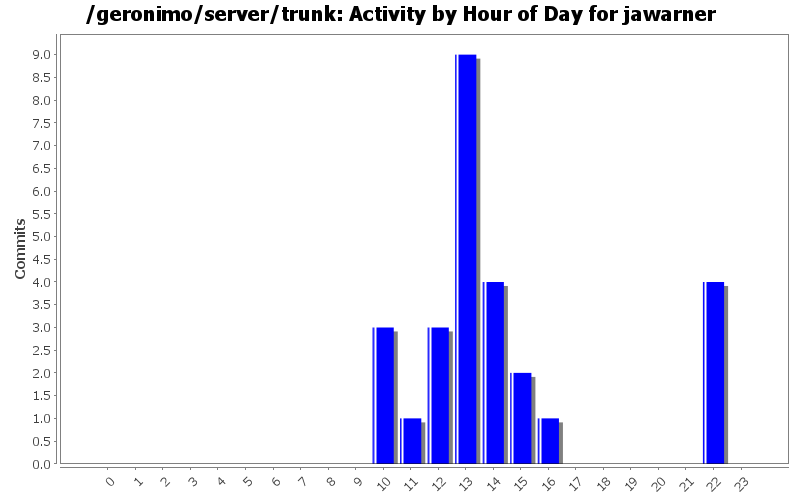
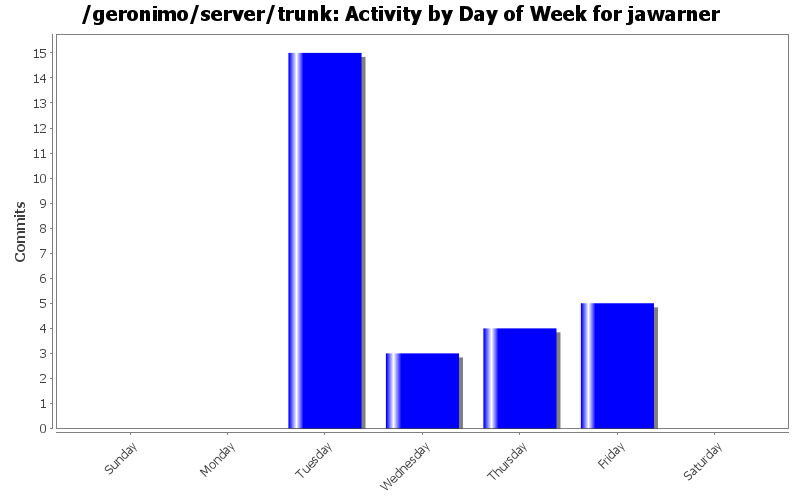

Adding nexus repository for apache snapshots
15 lines of code changed in 1 file:
Fixed typo in jsp
1 lines of code changed in 1 file:
GERONIMO-4453: Upgrade to shitty-maven-plugin 1.0-alpha-3
1 lines of code changed in 1 file:
Dependencies.xml updates to fix build break
20 lines of code changed in 2 files:
GERONIMO-4264: Enable static configuration of a wadi cluster
155 lines of code changed in 2 files:
GERONIMO-4244: Update to new wadi snapshot
1 lines of code changed in 1 file:
GERONIMO-4244: Update to new wadi snapshot
1 lines of code changed in 1 file:
GERONIMO-4220: Tomcat Cluster Sender gbean should all Transport element
18 lines of code changed in 2 files:
GERONIMO-3759: Geronimo Tomcat Clustering: No GBeans for adding Static Members
26 lines of code changed in 3 files:
GERONIMO-4187 : setManagerClassName has been deprecated for the SimpleTCPCluster class in Tomcat Clustering
11 lines of code changed in 2 files:
GERONIMO-4181 : Upgrade derby to 10.4.1.3
1 lines of code changed in 1 file:
GERONIMO-4177 : FarmWarDeployerGBean uses incorrect hardcoded tomcat class
1 lines of code changed in 1 file:
GERONIMO-4036: Warning message after running gsh geronimo/stop-server
27 lines of code changed in 3 files:
GERONIMO-4087: Improve usability of gshell commands deploy/* when failing to connect to server
2 lines of code changed in 1 file:
GERONIMO-4087: Improve usability of gshell commands deploy/* when failing to connect to server
0 lines of code changed in 1 file:
GERONIMO-4087: Improve usability of gshell commands deploy/* when failing to connect to server
6 lines of code changed in 1 file:
GERONIMO-4085: Update tomcat version to 6.0.16
4 lines of code changed in 3 files: